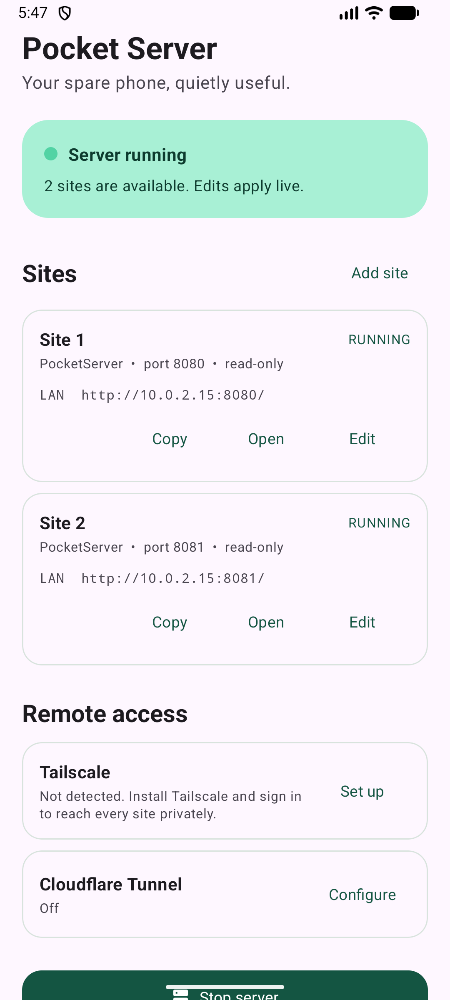

Add your sites
Each site gets one Android-selected folder, its own port, password, and read/write setting.
A multi-site server, without buying another computer
Pocket Server turns an Android phone into a password-protected multi-site server. Share folders at home, reach them privately with Tailscale, or publish selected hostnames through Cloudflare Tunnel.
Version 1.1.0 · Android 7.0+ · download size

Three calm steps
No terminal, root access, or Linux knowledge required.
Each site gets one Android-selected folder, its own port, password, and read/write setting.
Use home Wi‑Fi, install Tailscale for private remote access, or assign a Cloudflare hostname.
Add or edit sites while the server runs. Only the changed listener refreshes; the others stay available.
Small permission surface
Pocket Server does not include analytics, ads, or its own cloud storage. Android grants each site access only to its selected folder. Remote access remains off until you configure Tailscale or Cloudflare.
Install safely
Use the button below directly on the Android phone you want to turn into a server.
If Android asks, allow your browser to install this one unknown app. You can turn that permission off again afterward.
Select folders, keep the phone on power, then use LAN addresses immediately or configure Tailscale and Cloudflare from the app.
On Android 17 and newer, Android may also ask for local-network access. Future broad distribution may require the developer and package name to be registered through Android developer verification; APK hosting remains here on GitHub.
Useful limits
For simple file sharing, often yes. It is not a Docker host, a multi-drive NAS, or a good choice for heavy media transcoding.
Yes. Tailscale gives your approved devices private encrypted access. Cloudflare Tunnel gives selected sites an HTTPS hostname using Cloudflare account details you provide. Direct router port forwarding remains unsupported.
Yes. Every site has an independent folder, port, password, upload policy, and optional public hostname. Changes apply while the other sites continue serving.
The foreground service and Wi‑Fi lock are designed for that. Some manufacturers still apply aggressive battery controls, so exclude Pocket Server from battery optimization if needed.
The app is downloaded from GitHub instead of an app store. Confirm the SHA-256 checksum above if you want to verify the file before installing.